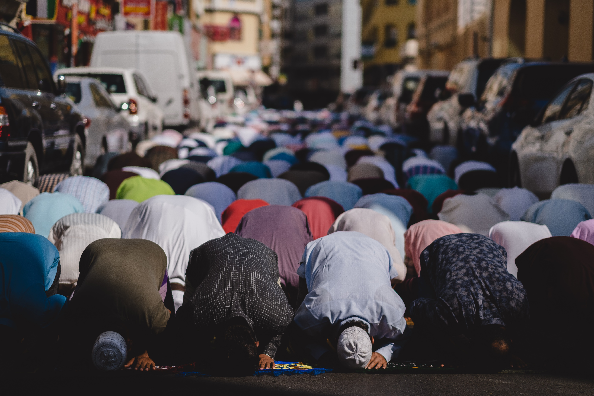

Etymology
The word Eid in Arabic, just means celebration
or
festival
. Adha means sacrifice
. Therefore,
Eid ul-Adha means A festival of sacrifice
.
Practices
During Eid al-Adha, distributing meat amongst the people, chanting
the takbir
out loud before the Eid prayers on the
first day and after prayers throughout the three days of Eid, are
considered essential parts of this important Islamic festival.
Men, women, and children are expected to dress in their finest
clothing to perform Eid prayer in a large congregation in an open
waqf (stopping
) field called Eidgah or mosque. Affluent
Muslims who can afford it sacrifice their best
halal domestic animals (usually a cow, but can also be a camel, goat, sheep, or ram
depending on the region) as a symbol of Abraham's willingness to sacrifice his only son.
The sacrificed animals, called aḍḥiya, known also by the
Perso-Arabic term qurbāni,
have to meet certain age and quality standards or else the
animal is considered an unacceptable sacrifice. In
Pakistan alone nearly ten million animals are slaughtered
on Eid days costing over US$2.0 billion.
The meat from the sacrificed animal is preferred to be divided into three parts.

Eid Prayer
The Eid prayer is performed in congregation in open areas like fields, community centers, or mosques. No call to prayer is given for this Eid prayer, and it consists of only two units of prayer with a variable amount of Takbirs and other prayer elements depending on the branch of Islam observed.The Eid prayer is followed by the sermon and then a supplication asking for Allah's Almighty forgiveness, mercy, peace and blessings for all living beings across the world. The sermon also instructs Muslims as to the performance of rituals of Eid, such as the zakat. Listening to the sermon at Eid is optional. After the prayers, Muslims visit their relatives, friends, and acquaintances or hold large communal celebrations in homes, community centers, or rented halls.
The slaughter
After the Eid prayer, every person starts preparation to slaughter
the animal. When they bring animal to slaughter, while the
animal is being slaughtered, the person reads the following lines,
which is known as Takbir:
Allāhu akbar, allāhu akbar lā ilāha illā-llāh allāhu akbar,
allāhu akbar walillāhi l-ḥamd
This process usually takes a whole Eid's first day.
The festive meal
Nothing beats annihilating a heap of aromatic, spicy, princely mutton biryani, cooked the royal style! A popular rice dish from South Asia that originated in Pakistan, Biryani make it to almost every holiday celebration, especially those which need an entire crew to be fed. Oozing with vegetables, meat, spices, and aromatic herbs, Biryani is a sure-shot show stopper for any celebration and is a traditional Eid Al Adha food in Pakistan!
Dinner parties
On second day of Eid, Muslims usually organize dinner parties
usually at their homes, many of them organize huge parties at
hotels or palaces. This tradition may vary region to region. In
Pakistan, Muslims usually invite their relatives at their home,
and usually organize BBQ. There is also a term called
Sajji
(Meat cooked on coals without cutting it into
pieces).